Медиа-скроллеры в Витебске, видеопанели в торговых сетях Минска, Могилёва, Гомеля и Новополоцка, собственный видеопродакшн и онлайн-бронирование рекламных мест. Один подрядчик вместо трёх, один договор и понятные цифры охвата до старта кампании.
Обновляем forus.by: адресная программа переезжает на сайт — выбор конструкции, охваты и бронирование дат онлайн, круглосуточно и без звонка менеджеру.
Мы выводим на улицы Витебска LED-медиа-скроллеры: светодиодная поверхность вместо бумажного плаката. Изображение видно в дождь и в темноте, макет меняется удалённо за минуты, а на одной конструкции последовательно идут несколько рекламодателей.
Собственная подсветка держит контраст с семи утра до полуночи и в пасмурный день, когда обычный щит теряет половину контактов.
Смена кадров, движение, анимированный логотип. Глаз цепляется за движущееся изображение раньше, чем за неподвижное.
Новая акция, новая цена, новый адрес — без печати, без монтажников и без простоя конструкции. Можно менять сообщение хоть каждый день.
Поверхность делится между несколькими рекламодателями, поэтому стоимость контакта ниже, чем при выкупе целого щита на месяц.
человек фактически проходит и проезжает мимо конкретной конструкции — по данным о реальных перемещениях, а не по оценке «на глаз»
пол и возраст аудитории в этой точке города: вы платите за тех, кто вам нужен, а не за общий поток
векторы движения и параметры видимости — прогноз эффективности размещения ещё на этапе планирования
Мы обновляем forus.by. Вся адресная программа ФОРУСа переезжает в личный кабинет на сайте: карта конструкций, свободные даты, охваты и счёт — без единого письма и звонка менеджеру. Заявка размещается за несколько минут, в любое время суток.
Карта города со всеми конструкциями, фотография каждой поверхности, формат и габариты.
По каждому адресу — данные «МТС Охват»: трафик, пол и возраст аудитории.
Календарь занятости в реальном времени. Свободный период закрепляется сразу.
Готовый файл или заявка нашему продакшну. Договор и счёт формируются в кабинете.
Несколько городов и десятки адресов в одном окне: видно, где кампания идёт, где место освободилось и какой макет крутится сейчас. Небольшой компании так же просто взять одну конструкцию на две недели.
Медиаплан для клиента собирается без запросов и ожидания ответа: занятость, охваты и стоимость сразу на экране. Сравнить два адреса по цене контакта — минута вместо встречи.
Собственная производственная база: съёмка, монтаж, графика, озвучка, ИИ-инструменты. Ролик сразу собирается под ту поверхность, где будет крутиться, поэтому перевёрстка макета и потеря недели на согласования исключены.
Для медиа-скроллеров, экранов, сайта и соцсетей. От статичного макета с дикторской озвучкой до динамичного видеоряда с графикой и звуковым дизайном.
Фильм к дате компании, история производства, интервью с сотрудниками и ветеранами, ролик для выставки, для отчётного собрания и для раздела вакансий.
Один герой, одна история, 4–6 выпусков с развитием событий. Зритель досматривает серию и ждёт следующую, а бренд получает несколько контактов с одной и той же аудиторией вместо одного. Формат одинаково работает на уличных медиа-скроллерах, на экранах в торговых центрах и в ленте соцсетей — и стоит заметно дешевле, чем четыре не связанных между собой ролика, потому что герой, локация и графика разрабатываются один раз.
Анимация логотипа, брендированные заставки, инфографика в движении, анимированные титры.
Вертикальные видео под Reels, Shorts и TikTok. Одна съёмка нарезается на серию коротких роликов и работает месяц.
Предметная и каталожная для сайта и маркетплейсов, репортаж с производства и мероприятий, портреты для HR-бренда.
Kling, Sora, апскейл и шумоподавление, генеративные вставки. Сцены, которые дорого снимать или физически негде снять.
Единой цены за секунду мы не публикуем: два ролика одинаковой длины могут различаться по трудоёмкости в несколько раз. На стоимость влияют:
| Что влияет | Как именно |
|---|---|
| Формат ролика | статичный кадр с музыкой, кадр с дикторской озвучкой или динамичный видеоряд |
| Озвучка | наличие диктора и количество голосов |
| Графика | спецэффекты, компьютерная графика, сложная анимация |
| Объём исходников | сколько отснятого материала, сколько камер и звуковых дорожек |
| Срочность | требования к срокам сдачи |
| Дополнительно | сценарий, подбор музыки, премиальные ИИ-инструменты |
Напишите нам сферу деятельности и город. В течение двух рабочих дней вы бесплатно получите:
Никаких обязательств. Если удобнее голосом — 15 минут разговора в любое рабочее время.